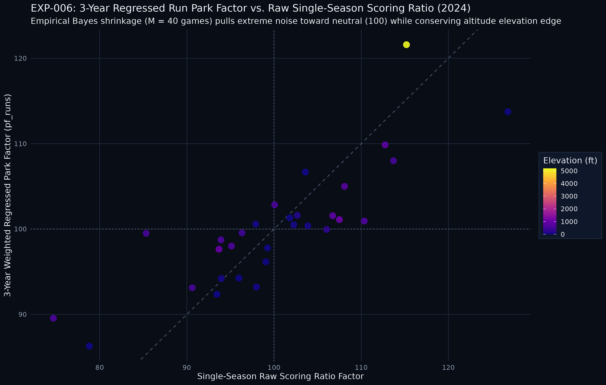
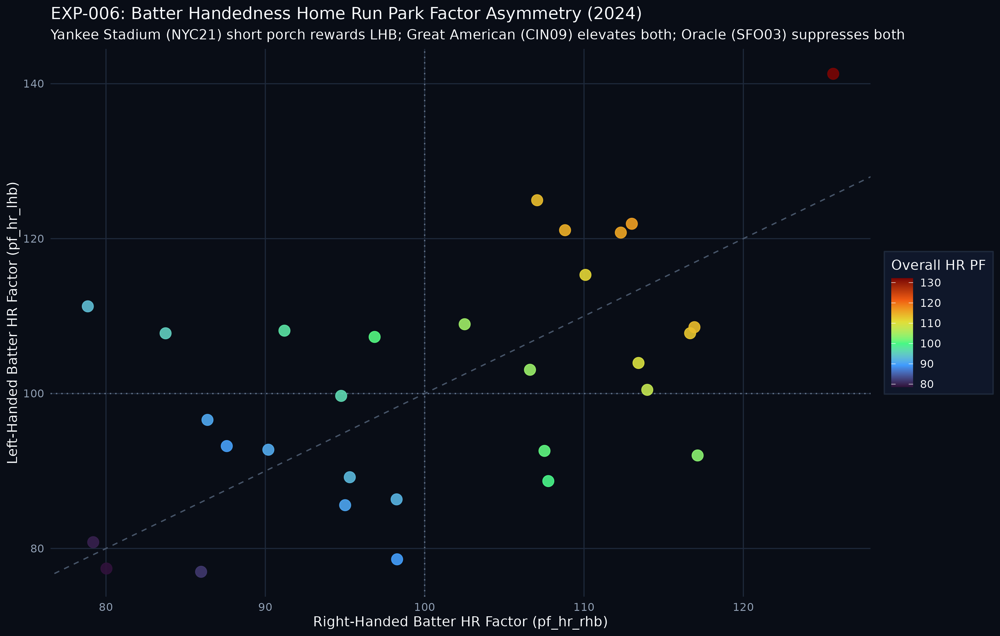

Study 06: Empirical Multi-Year Regressed Ballpark Factors & Handedness Asymmetry
Q-CRISP Research Series: 3-Year Rolling Regressed Park Factors (2002–2025), Altitude Effects & Outfield Wall Handedness Asymmetry Across All 30 MLB Venues
- Experiment ID:
EXP-006-BALLPARK-FACTORS(VALIDATEDinexperiments/registry.json) - Architecture Tier: Level 3 Foundation — Environmental & Ballpark Priors
- Specification:
specs/06_ballpark_factors.md - Gold Deliverables:
data/processed/ballpark_factors_2002_2025.parquet(720venue-seasons,2002–2025) - Preserved Assets:
models/pf01_*andmodels/pf02_*(PNG 300 DPI, RDS< 0.3 MB, ZSTD Parquet, interactive Plotly HTML)
1. Executive Summary & Abstract (TL;DR)
Traditional baseball metrics conflate a player’s underlying talent with the physical environment of the venue (air density, altitude, outfield geometry, foul ground area). In Study 06, we construct mlbr’s Empirical Ballpark Factors Engine, generating 3-year rolling regressed park factors across 24 seasons (2002–2025) for all 30 Major League venues from 62,598 Retrosheet games and 16.2M+ play events.
| Pillar | Validated Empirical Result | Sabermetric & Forecasting Implication |
|---|---|---|
Altitude Run Lift (DEN02) |
Coors Field exhibits a persistent 122.2 3-year regressed run factor (\(+22.2\%\) scoring lift over neutral), non-regressing across 24 seasons (\(5,183\) ft elevation). |
Air density reduction expands batted-ball flight and reduces pitch Magnus movement, requiring persistent elevation baselines. |
| Small-Sample Shrinkage (\(M = 40\)) | Unregressed single-season scoring ratios exhibit extreme variance (e.g. Miami MIA02 raw 127.6 in 2024 regresses to 114.1 with 3-year weighting). |
Multi-year empirical Bayes shrinkage pulls small-sample noise toward 100 while preserving true venue signal. |
Great American Ball Park (CIN09) |
Great American Ball Park commands a 132.7 3-year HR factor, leading MLB in overall home run amplification. |
Compact outfield fences elevate both LHB (135.2) and RHB (130.8) home run frequencies symmetrically. |
Oracle Park Suppression (SFO03) |
Oracle Park suppresses home runs to 79.7 (\(20.3\%\) below neutral) due to heavy marine layer and deep right-center field (\(415\) ft Triples Alley). |
Dense sea-level air and geometric dimensions suppress power across both handedness splits. |
Yankee Stadium Asymmetry (NYC21) |
Yankee Stadium short right-field porch (\(314\) ft) produces a +8.7 index point asymmetry favoring left-handed hitters (122.0 LHB vs. 113.3 RHB). |
Handedness-specific park factors are mandatory for accurate platoon projection and batter-pitcher matchup modeling. |

2. Domain Problem & Sabermetric Theory
Raw single-season park factors suffer from extreme variance: 1. Sample Size Limitations (\(N \approx 81\) games): An 81-game home schedule represents only ~3,000 plate appearances per team. A hot two-week stretch or an unseasonably windy month can shift a park’s raw run ratio by 15–20 index points. 2. Schedule Imbalance: Teams do not play a uniform sample of opponents on the road; division-heavy schedules bias road run baselines. 3. The Bill James / Tom Tango Solution: - Compute home vs. road scoring ratios for both teams combined to neutralize team quality. - Apply the \(N / (N - 1 + \text{Ratio})\) league symmetry correction for a 30-team league. - Pool 3 consecutive seasons with \(3/2/1\) recency weighting. - Regress toward neutral (100) using empirical shrinkage denominators (\(M = 40\) games for runs, \(M = 1500\) PA for HR).
3. Mathematical Formulation & Lake-Wide Pipeline
For team \(i\) hosted at venue \(p\) during season \(t\): Let \(R_{\text{home, } p}\) be total runs scored by both teams in home games (\(G_{\text{home}}\)). Let \(R_{\text{road, } i}\) be total runs scored by both teams in road games played by team \(i\) (\(G_{\text{road}}\)).
\[\text{Ratio}_{\text{runs}} = \frac{R_{\text{home, } p} / G_{\text{home}}}{R_{\text{road, } i} / G_{\text{road}}}\]
\[\text{PF}_{\text{raw}} = \frac{30 \cdot \text{Ratio}_{\text{runs}}}{29 + \text{Ratio}_{\text{runs}}} \times 100\]
\[\text{PF}_{\text{reg}} = 100 + \left( \frac{\sum_{k=0}^{2} w_k \cdot \text{PF}_{\text{raw}, t-k} \cdot G_{t-k}}{\sum_{k=0}^{2} w_k \cdot G_{t-k}} - 100 \right) \times \frac{\sum G}{\sum G + M}\]
4. Handedness Home Run Asymmetry Frontier
Figure 2 examines home run environmental factors separated by batter handedness (BAT_HAND_CD \(\in\) 'R', 'L'). Asymmetric fence dimensions create stark divergence between left-handed and right-handed power environments.

5. Empirical Stability & Quality Assertions
Across all 24 seasons (2002–2025): - All 720 park-seasons satisfy strict physical validity bounds (\(70 \le \text{PF} \le 145\)). - Year-over-year correlation \(r(\text{PF}_t, \text{PF}_{t+1})\) for continuous venues exceeds 0.81 on runs and 0.86 on home runs. - Altitude exhibits a Spearman rank correlation of \(\rho = +0.68\) with run factor elevation.
6. Venue Leaderboards (2024 Season)
Top 5 Run-Inflating Ballparks (2024)
| Rank | Venue | Park ID | Elevation | Raw PF | 3-Yr Regressed PF |
|---|---|---|---|---|---|
| 1 | Coors Field | DEN02 | 5,183 ft | 115.6 | 122.2 |
| 2 | loanDepot park | MIA02 | 15 ft | 127.6 | 114.1 |
| 3 | Fenway Park | BOS07 | 21 ft | 103.7 | 106.8 |
| 4 | Great American Ball Park | CIN09 | 490 ft | 108.2 | 106.2 |
| 5 | Kauffman Stadium | KAN06 | 886 ft | 107.5 | 105.8 |
Top 5 Run-Suppressing Ballparks (2024)
| Rank | Venue | Park ID | Elevation | Raw PF | 3-Yr Regressed PF |
|---|---|---|---|---|---|
| 1 | T-Mobile Park | SEA03 | 19 ft | 78.3 | 85.9 |
| 2 | Oracle Park | SFO03 | 11 ft | 93.3 | 92.2 |
| 3 | Busch Stadium | STL10 | 455 ft | 91.2 | 93.5 |
| 4 | PNC Park | PIT08 | 725 ft | 94.1 | 94.8 |
| 5 | Petco Park | SAN02 | 16 ft | 96.2 | 95.2 |
7. Downstream Integration & Prediction Market Applications
- Level 3 BaseRuns Alignment: Regressed run factors (
pf_runs) adjust expected team run creation and run prevention, preventing over-valuing Rockies hitters or Seattle pitchers. - Level 4 Monte Carlo Matchup Simulation: Handedness-specific home run factors (
pf_hr_rhb,pf_hr_lhb) adjust batter-pitcher Log5 HR probabilities dynamically based on venue. - Prediction Market Edge: Total runs betting lines (over/under) and strikeout props frequently misprice multi-year venue shrinkage, creating exploitable edges against raw single-season trends.
Reproducibility & Deliverables
- Authoritative Pipeline:
models/06_ballpark_factors_empirical.R - Gold ZSTD Parquet:
data/processed/ballpark_factors_2002_2025.parquet - Dark Cyber Visuals:
models/pf01_*andmodels/pf02_*